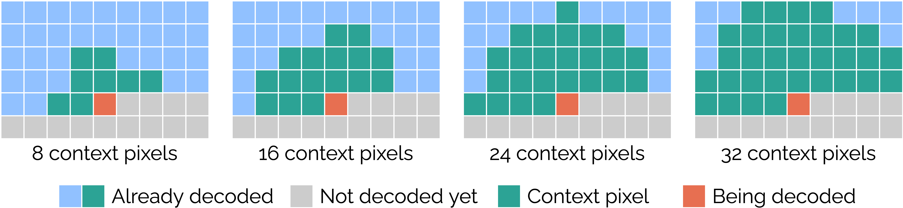

Neural network architecture#
This section details how to change the architecture of the Cool-chic decoder through the following arguments:
--n_ft_per_res--arm--layers_synthesis--upsampling_kernel_size--static_upsampling_kernel
Tip
Many useful info are logged inside the workdir specified when encoding an image or video.
(venv) python src/encode.py \
--input=path_to_my_example \
--output=bitstream.bin \
--workdir=./my_temporary_workdir/
The file ./my_temporary_workdir/frame_XXX/archi.txt contains the
detailed Cool-chic architecture, number of parameters and number of
multiplications.
Latent dimension#
Most of the information about the frame to decode is stored inside a set of hierarchical latent grids. This is parameterized by indicating the number of features for each resolution separated by comas e.g
Using a 512x768 image from the Kodak dataset as an exemple gives the
following latent dimensions
(venv) python src/encode.py --input=kodim01.png --n_ft_per_res=1,0,2,3
cat ./frame_000/archi.txt
| module | #parameters or shape | #flops |
|:----------------------------------------|:-----------------------|:---------|
| model | | |
| latent_grids | | |
| latent_grids.0 | (1, 1, 512, 768) | |
| latent_grids.2 | (1, 2, 128, 192) | |
| latent_grids.3 | (1, 3, 64, 96) | |
Auto-regressive module (ARM)#
The auto-regressive probability module (ARM) predict the distribution of a given
latent pixel given its neighboring pixels, driving the entropy coder. It is
tuned by a single parameter --arm=<X>,<Y> serving two purposes:
The first number
Xrepresents both the number of context pixels and the number of hidden features for all hidden layers.The second number
Ysets the number of hidden layer(s). Setting it to 0 gives a single-layer linear ARM.
Note
The ARM always has the same number of output features: 2. One is for the expectation \(\mu\) and the other is a re-parameterization of the standard deviation \(-2 \ln \sigma\).
Attention
Due to implementation constraints, we impose the following restrictions on the ARM architecture:
The number of context pixels and hidden features are identical and must be a multiple of 8
All layers except the output one are residual followed with a ReLU activation
The different context patterns are as follows:
Using a 512x768 image from the Kodak dataset as an exemple:
(venv) python src/encode.py --input=kodim01.png --arm=24,2
cat ./frame_000/archi.txt
| module | #parameters or shape | #flops |
|:----------------------------------------|:-----------------------|:----------|
| model | 0.526M | 0.901G |
| arm.mlp | 1.25K | 0.629G |
| arm.mlp.0 | 0.6K | 0.302G |
| arm.mlp.0.weight | (24, 24) | |
| arm.mlp.0.bias | (24,) | |
| arm.mlp.2 | 0.6K | 0.302G |
| arm.mlp.2.weight | (24, 24) | |
| arm.mlp.2.bias | (24,) | |
| arm.mlp.4 | 50 | 25.164M |
| arm.mlp.4.weight | (2, 24) | |
| arm.mlp.4.bias | (2,) | |
Upsampling#
The upsampling network takes the set of hierarchical latent variables and
upsample them to obtain a dense latent representation with the same resolution
than the image to decode e.g. [C, H, W] for a H, W image. This is done
by applying a single transposed convolution 2d \(N\) times to achieve an
upsample of \(2^N\).
The transpose convolution kernel can be learned… or not. The argument
--static_upsampling_kernel indicates that the upsampling kernel is
not learned. The size of the transpose convolution kernel is changeable
through the parameter --upsampling_kernel_size.
Attention
The upsampling kernel size should be even and greater or equal to 4.
# Non learnable 4x4 kernel
(venv) python src/encode.py --input=kodim01.png --upsampling_kernel_size=4 --static_upsampling_kernel
cat ./frame_000/archi.txt
| module | #parameters or shape | #flops |
|:----------------------------------------|:-----------------------|:----------|
| model | 0.525M | 0.309G |
| upsampling.upsampling_layer | 16 | 12.3M |
| upsampling.upsampling_layer.weight | (1, 1, 4, 4) | |
# Learnable 8x8 kernel
(venv) python src/encode.py --input=kodim01.png --upsampling_kernel_size=8
cat ./frame_000/archi.txt
| module | #parameters or shape | #flops |
|:----------------------------------------|:-----------------------|:----------|
| model | 0.526M | 0.901G |
| upsampling.upsampling_layer | 64 | 50.909M |
| upsampling.upsampling_layer.weight | (1, 1, 8, 8) | |
Tip
The initialization of the upsampling kernel changes with its size. For kernel of size 4 and 6 it is initialized with a bilinear kernel (zero padded if needed). For size 8 and above, it is initialized with a bicubic kernel (zero padded if needed).
Synthesis#
The synthesis transform is a convolutive network mapping the dense latent input
[C, H, W] to a X, H, W output. The number of output feature X depends
on the type of frame:
I (intra) frames have
X = 3output channels e.g. RGB or YUV. This is the case for still image compression and the first frame of a GOPP frames have
X = 6output channels: 3 for the residue, 2 for one motion field and 1 for the \(\alpha\) parameterB frames have
X = 9output channels: 3 for the residue, 4 for two motion fields, 1 for the \(\alpha\) parameter and 1 for the \(\beta\) parameter.
The synthesis is tuned by a single parameter
--layers_synthesis=<layer1>,<layer2> which describes all layers, separated
by comas. Each layer is decomposed as follows:
<output_dim>-<kernel_size>-<type>-<non_linearity>
output_dimis the number of output features. Set the last layer(s) toXto be automatically replaced by the appropriate value according to the frame type.kernel_sizeis the size of the convolution kerneltypeis eitherlinear(normal convolution) orresidual(convolution + skip connexion)non_linearitycan berelu,leakyrelu,geluornone
Note
The number of input features for each layer is automatically inferred from the previous one or from the number of latent features.
Using a 512x768 image from the Kodak dataset and 7 input features as an exemple:
(venv) python src/encode.py --input=kodim01.png --n_ft_per_res=1,1,1,1,1,1,1 --layers_synthesis=40-1-linear-relu,3-1-linear-relu,X-3-residual-relu,X-3-residual-none
cat ./frame_000/archi.txt
| module | #parameters or shape | #flops |
|:----------------------------------------|:-----------------------|:----------|
| model | 0.526M | 0.901G |
| synthesis.layers | 0.611K | 0.221G |
| synthesis.layers.0.conv_layer | 0.32K | 0.11G |
| synthesis.layers.0.conv_layer.weight | (40, 7, 1, 1) | |
| synthesis.layers.0.conv_layer.bias | (40,) | |
| synthesis.layers.1.conv_layer | 0.123K | 47.186M |
| synthesis.layers.1.conv_layer.weight | (3, 40, 1, 1) | |
| synthesis.layers.1.conv_layer.bias | (3,) | |
| synthesis.layers.2.conv_layer | 84 | 31.85M |
| synthesis.layers.2.conv_layer.weight | (3, 3, 3, 3) | |
| synthesis.layers.2.conv_layer.bias | (3,) | |
| synthesis.layers.3.conv_layer | 84 | 31.85M |
| synthesis.layers.3.conv_layer.weight | (3, 3, 3, 3) | |
| synthesis.layers.3.conv_layer.bias | (3,) | |